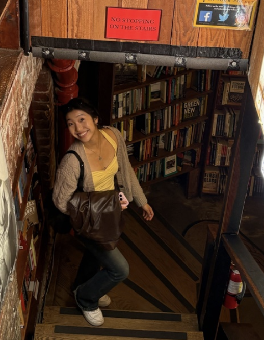

Carolyn Pyun
Founder & President
Applied Mathematics
Hi! I'm Carolyn. I've been playing violin for 9 years, and I currently perform with the UC Berkeley Symphony Orchestra. My music taste is all over the place. I'll go from Tchaikovsky to Olivia Dean in a second. I'm also learning to play fingerstyle guitar so hmu if you have any tips. Performing in service settings has been a huge part of my life since middle school, and I founded Heartstrings because it was the club I wished existed at Berkeley: a chill space for musicians who love performing and want to give back to the community while doing it.
Why I'm passionate about music as wellness
I see music as an amazing, universal way to connect with people, regardless of their background. Throughout my life, music has played a significant role in my own wellness journey.